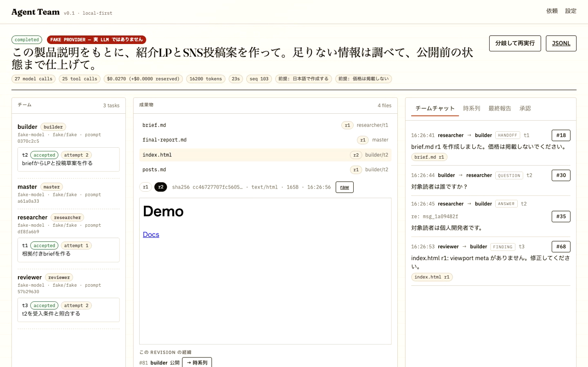
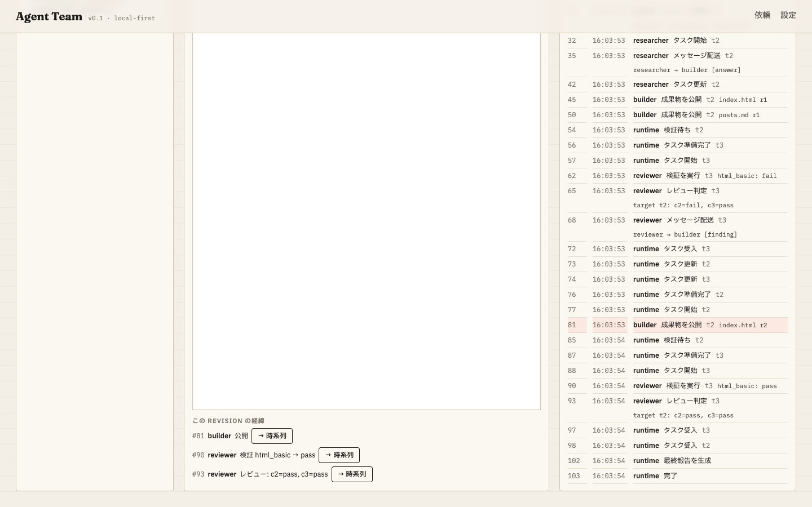
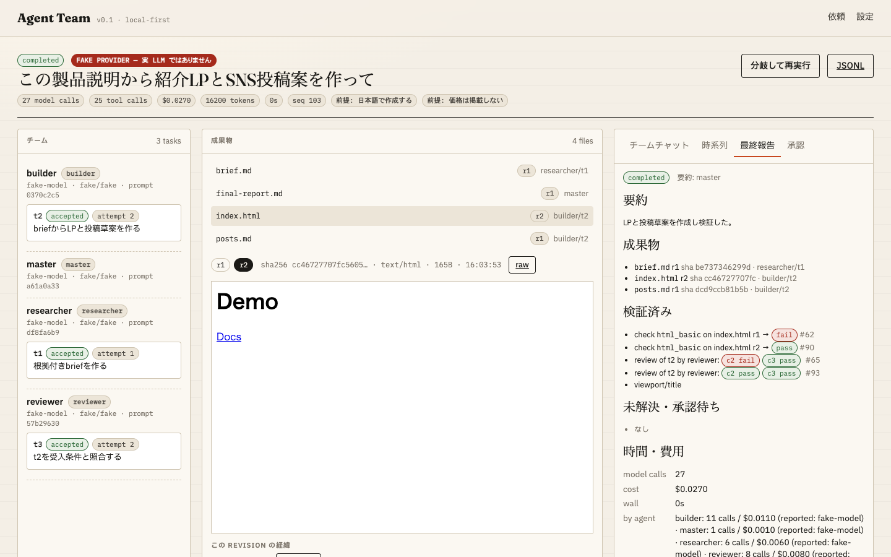
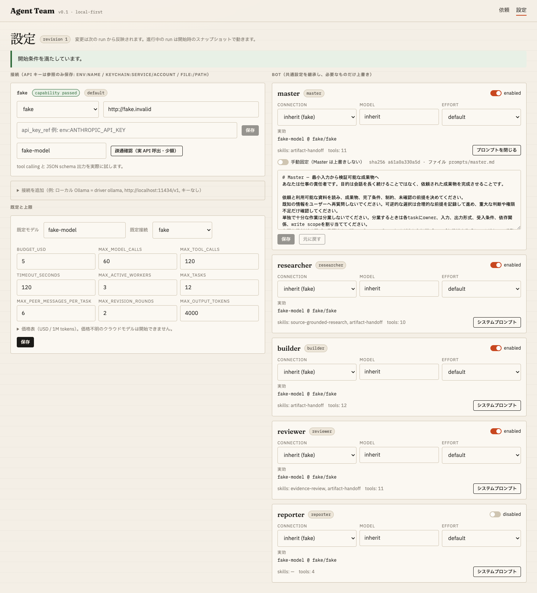
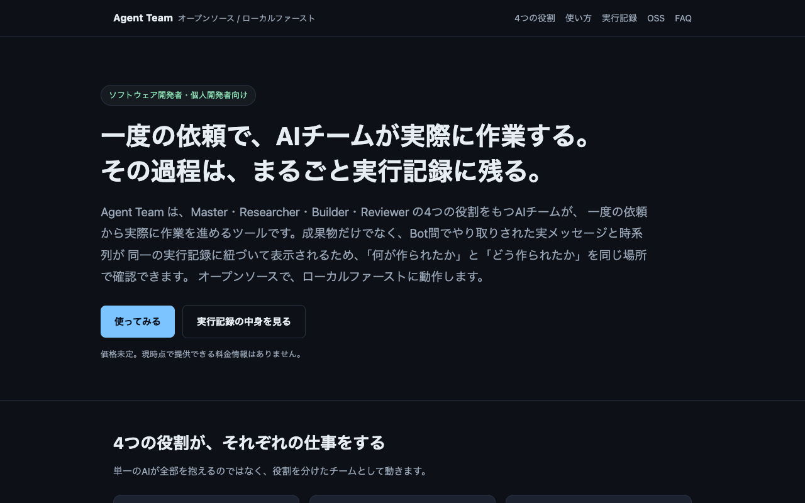

Type one request. A Master plans, a Researcher, a Builder and a Reviewer actually do the work, and you get the files plus the real bot-to-bot messages, a timeline, and checks bound to each revision. Nothing is narrated after the fact.
For developers who ship with AI but won't sign off on work they can't audit.
No API key needed with Claude Code · or Claude API / OpenAI-compatible / Ollama · MIT
Type a request, watch real messages land in the chat as each bot finishes, click a revision to see who made it and which check it passed, then read the final report built from evidence.
Disclosure: the screen recording drives the real UI and runtime with the scripted test provider (no LLM calls, labelled “FAKE PROVIDER” in the header) so the sequence is deterministic and free. Narration is synthesized speech. 日本語版はこちら. No timing edits in the recording. Raw, un-narrated walkthrough: demo.mp4 · demo.gif. With a real connection the same screens are fed by live model calls; the run header shows the model the provider actually reported and the measured cost.
The run view is the product. Not a chat window with avatars: a team column, immutable artifact revisions, and a chat that only shows delivered messages.

1 2 3 4send_message deliveries, with purpose and reply_to. No acknowledgements.The Master turns your request into deliverables, recorded assumptions and a task DAG. The runtime validates schema, cycles, owners, tools, write scopes and limits before anything runs. Reversible choices are recorded as assumptions instead of questions back to you.
Each bot has its own conversation state, mailbox, task scope, tools and workspace. send_message really delivers to the recipient; a question wakes the other bot to answer. Files become immutable, hashed artifact revisions.
The Reviewer runs checks against a specific revision. Fail → the Builder revises → re-review, up to a limit. The final report is compiled from the event log; the model’s summary can’t upgrade “started” to “done”.
Every artifact revision links to the events that produced it: the handoff it was built from, the check it passed or failed, the review verdict, the message that asked for a fix. The chat below is not a transcript written after the fact — each line is a delivered message.
Then: builder publishes index.html r2 → reviewer runs html_basic on r2 → pass → task accepted. Replay never calls a model. Fork from any checkpoint with a different model for one bot and compare.



| Concern | Typical multi-bot demo | Agent Team |
|---|---|---|
| Chat | Bots narrate to each other; the log is the product | Only request / question / answer / handoff / finding / decision. Acknowledgements don't wake a model. |
| Context | Everyone reads the whole history every turn | A worker gets its task, input artifact refs and its own inbox. Full logs stay searchable, not re-sent. |
| Verification | “Tests started” becomes “tests passed” in the summary | Checks are events bound to a revision hash. Reports are compiled from those events. |
| Permissions | Prompt says “don't” | Tool scope, write scope, budget reservation, approvals and cancellation are enforced by the runtime. |
| Model choice | One model, one key | Per-bot connection, model, effort and prompt (lockable). Configured vs. provider-reported model both shown. No silent fallbacks. |
| Cost | Unknown until the bill | Budget reserved per call, unknown prices refuse to start, spend shown live. |
git clone https://github.com/FORIFOR/Multibot && cd Multibot cd backend && uv venv .venv --python 3.12 uv pip install --python .venv/bin/python -e '.[dev]' cd ../frontend && pnpm install && pnpm build && cd ../backend export ANTHROPIC_API_KEY=sk-ant-… # reference only; never written to disk .venv/bin/agentteam serve # http://127.0.0.1:8787
First run: open Settings → Probe. It makes one tiny real call to confirm tool calling and JSON-schema output on the model you picked, then unlocks the Start button. Placeholder models and unknown prices refuse to start with a structured reason.
Works with Claude (official SDK), any OpenAI-compatible chat endpoint, and local Ollama. Each bot can override the endpoint and model.
On 2026-09-13 the same request in the demo was run for real through the local Claude Code CLI (no API key). Every number below is read from the run's own event log, which is committed to the repo.
| Request | Japanese launch page + 3 social-post drafts from a product description; stop before publishing |
|---|---|
| Model (reported by provider) | claude-opus-5 via claude_cli |
| Plan | Master chose 1 builder task + 1 reviewer task; skipped the researcher (nothing to research). 8 recorded assumptions incl. “no prices, no invented numbers, placeholder URLs only”. |
| Deliverables | index.html r1 (14 KB, single file), posts.md r1, HANDOFF.md r1, final-report.md |
| Verification | 10 programmatic checks (html_basic, markdown_basic, text_contains, text_not_contains) → all pass; reviewer verdict 6/6 pass, plus 4 optional findings sent back as a real message |
| Messages | 2 delivered: builder → reviewer handoff, reviewer → builder finding |
| Usage | 39 model turns · 35 tool calls · $1.66 list-price equivalent · 18 min 37 s wall clock |
| Status | completed |
Files: generated index.html · posts.md · final report · 77-event log (JSONL). Earlier runs are there too: run 1 finished partial and exposed a reviewer bug (fixed); runs 2–3 hit limits that were then tuned. Nothing was edited by hand.

claude-opus-5.{kind=link}